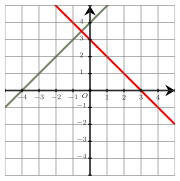
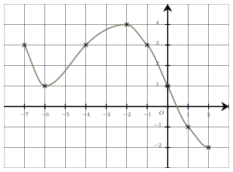
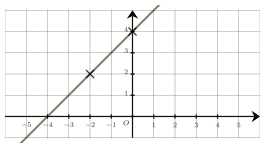
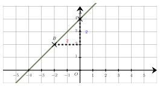
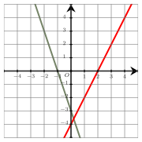
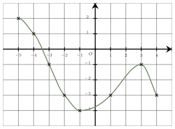
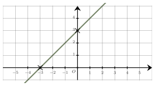

Semaine 11
Expressions algébriques et fonctions
QCM à réponse unique — choisis une proposition pour révéler la correction immédiatement.
Même QCM, sans correction — ton score apparaît une fois toutes les questions complétées.
On additionne d’abord $x$ avec son triple $3x$ : $x + 3x = 4x$.
Puis on élève le résultat au carré : $\boldsymbol{(4x)^2}$. La bonne réponse est la réponse D.
 Parmi les quatre expressions proposées pour la fonction $f$, une seule est possible.
Parmi les quatre expressions proposées pour la fonction $f$, une seule est possible.
Parmi les réponses proposées, on cherche la fonction affine qui s’annule en $1$ et dont le coefficient directeur est positif. En effet, la droite représentant la fonction $f$ est croissante car la fonction donne des images négatives puis positives d’après le tableau de signes.
Il s’agit de la fonction $f$ définie par $\boldsymbol{f(x)=3x-3}$. La bonne réponse est la réponse A.
L’équation $2x^2+3x-5=-5$ s’écrit $2x^2+3x=0$.
En factorisant le premier membre (facteur commun $x$), on obtient $x(2x+3)=0$.
On reconnaît une équation produit nul dont les solutions sont : $0$ et $\dfrac{-3}{2}=-\dfrac{3}{2}$.
$\mathscr{S}=\boldsymbol{\lbrace 0;-\dfrac{3}{2}\rbrace}$ La bonne réponse est la réponse D.

Le tableau de signes de la fonction $f$ définies par $f(x)=g(x)\times h(x)$ sur $\mathbb{R}$ est :La fonction $g$ s’annule en $-4$ et la fonction $h$ s’annule en $3$.
Quand la droite est en-dessous de l’axe des abscisses, la fonction est négative et quand elle est au-dessus, la fonction est positive.
On en déduit le tableau de signes de leur produit :
La bonne réponse est la réponse C.

L’équation $f(x)=3$ a :Le nombre de solutions de l’équation $f(x)=3$ est le nombre d’antécédents de $3$ par la fonction $f$.
Puisque la droite d’équation $y = 3$ (droite hrizontale) coupe $3$ fois la courbe, on en déduit que l’équation $f(x)=3$ admet $\boldsymbol{3}$ solutions. La bonne réponse est la réponse A.

L'équation réduite de cette droite est :Le coefficient directeur $m$ de la droite $(AB)$ est donné par :
$m=\dfrac{\boldsymbol{2}}{\boldsymbol{2}}=1$.
Son ordonnée à l’origine est $4$, ainsi l’équation réduite de la droite est $\boldsymbol{y=x+4}$.

La bonne réponse est la réponse B.

Le tableau de signes de la fonction $f$ définies par $f(x)=g(x)\times h(x)$ sur $\mathbb{R}$ est :
L’équation $f(x)=2$ a :
L'équation réduite de cette droite est :